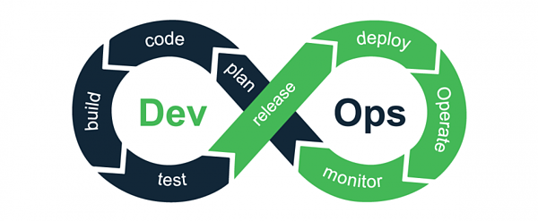

Introduction to MLOps
Contents
Introduction to MLOps¶
Environment setup¶
import platform
print(f"Python version: {platform.python_version()}")
assert platform.python_version_tuple() >= ("3", "6")
from IPython.display import YouTubeVideo
Python version: 3.7.5
The Machine Learning workflow¶
Codifying problems and metrics¶
Main questions:
What is the business objective?
How to measure success?
What are the technical, temporal and organisational constraints?
Possible solutions: communicate with PO and stakeholders, knowing product and client needs.
Data collection and cleaning¶
Main questions:
Which data?
Is it free/in adequate quantity/noisy/labelled/biased?
Is it stable or evolving?
Possible solutions: public datasets, DVC, Doccano, manual work.
Feature engineering¶
Main questions:
What is the format of my input data?
Whet features could potentially be useful for my models?
How are they retrieved during training and production?
Possible solutions: data pipelines, feature stores, domain experts.
Model training and tuning¶
Main questions:
Which model(s)?
How to optimize its performance?
How to track model versions?
Possible solutions: starting simple, hyperparameter tuning, MLflow.
Model validation¶
Main questions:
Does the model address the business objective?
How to measure its performance?
Are there uptime constraints for my model?
Possible solutions: testing set, continuous integration, memoization.
Model deployment¶
Main questions:
How to serve my model?
How to handle model versioning?
How to handle scaling?
Possible solutions: FastAPI, Docker, Kubernetes, Cortex, Databricks, stress tests.
Monitoring, validation¶
Main questions:
How to check model performance in production?
How to prevent model drifting?
How to explain model results?
Possible solutions: A/B testing, canary release, explainability tools.
From DevOps to MLOps¶
Motivation¶
“The real challenge isn’t building an ML model, the challenge is building an integrated ML system and to continuously operate it in production.”
Elements of a ML system¶

DevOps¶
DevOps is a set of practices that combines software development (Dev) and IT operations (Ops). Its goal is to shorten the product delivery loop while maintaining high quality.
It implies constant collaboration between the development and infrastructure teams, as well as the use of several tools to automate and streamline the push to production and monitoring of a project.

MLOps¶
MLOps is the process of automating and productionalizing Machine Learning-based systems. MLOps integrates data- and model-specific tasks into the DevOps workflow cycle to obtain a unified release process. Like DevOps, it combines ML system development (Dev) and ML system operation (Ops).
MLOps core principles¶
Like DevOps, MLOps is built on the following principles:
Automation.
Continuous X (integration, delivery and training).
Versioning.
Testing.
Overview of some MLOps tools¶
Flask & FastAPI¶
Flask is a fast and lightweight web framework written in Python. It can be used to deploy Machine Learning models as APIs.
FastAPI is another lightweight web framework for builiding APIs. it has become the standard for deploying Python ML models on the web.
DVC¶
DVC (“Data Version Control”) is an open source project that extends Git version control to data and model files. DVC uses a remote repository (including supports all major cloud providers) to store all the data and models for a project. In the actual code repository, a pointer to this remote location is stored to access the actual artifacts.
YouTubeVideo("UbL7VUpv1Bs")
MLflow¶
MLflow is an open source platform for managing the end-to-end machine learning lifecycle. It can:
track ML experiments (training runs) to record and compare parameters and results;
package ML code in a reusable, reproducible form;
manage and deploy models from a variety of ML libraries to a variety of model serving and inference platforms.
MLflow can be used with any ML library, in any programming language. Python, R and Java are supported out-of-the-box. It is included in several ML cloud platforms, like Databricks.